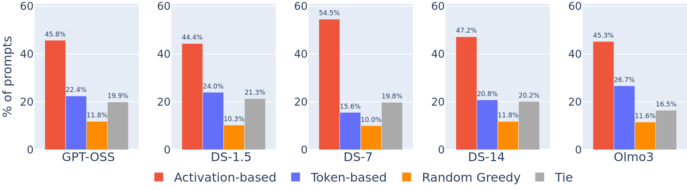
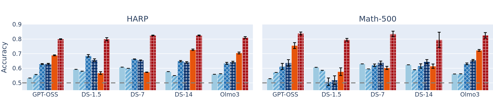
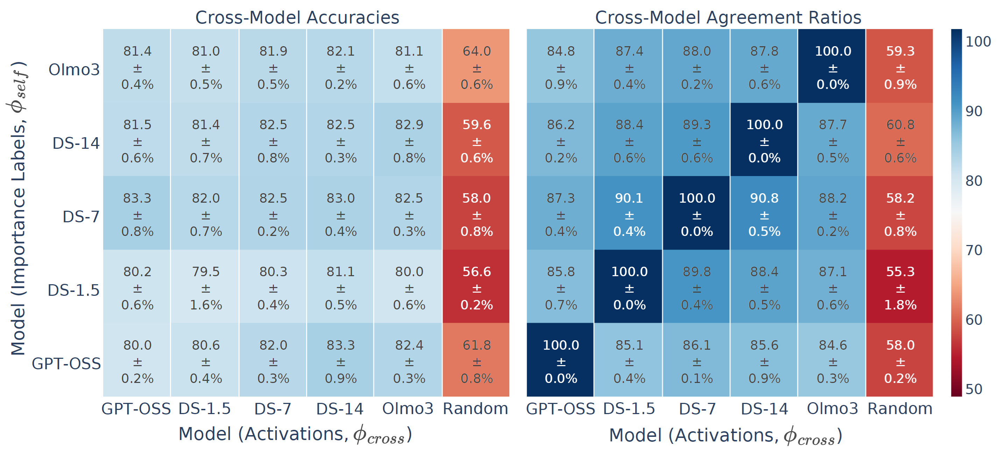
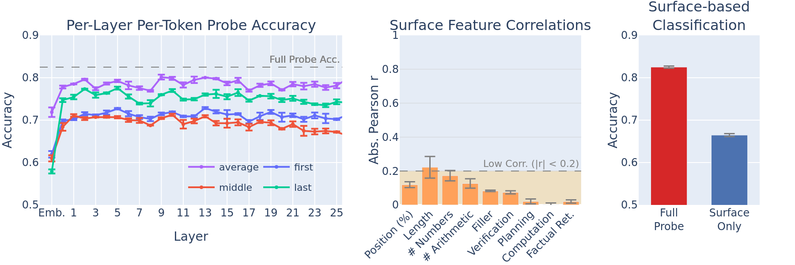

Reasoning language models produce long chains-of-thought, but it is unclear whether every generated step is actually needed to reach the correct answer.
We show that reasoning models internally "know" which of their own reasoning steps are important, and encode this information directly in their activations, before later steps have even been generated.
We define step importance via removability: a step is important if dropping it from the chain breaks the ability of the model to reach the correct answer.
We find that:
(i) an activation-gradient-based procedure isolates a small core reasoning subsequence that suffices to answer correctly,
(ii) nonlinear probes on activations recover step importance with high accuracy, whereas token-level features or context-less activations fail, and
(iii) activations of different models yield similar importance signals: training a probe on one model's activations can be used to predict another model's labels with high accuracy and high agreement.
We define importance through removability: a step is important if removing it makes the model answer incorrectly or if it makes the answer not attainable. Starting from a model's full chain-of-thought, we greedily remove steps and check whether the model can still reach the correct answer. The remaining steps that cannot be removed form the core reasoning subsequence.
We compare three greedy variants for choosing how to rank steps for removal:
The activation-based procedure yields the shortest core reasoning subsequences across models, meaning it correctly identifies more steps as removable. Token-based judgments lag behind, indicating that which steps causally matter is not easily read off the surface text.

Once we have removability labels for each step, we ask a sharper question: at the moment a step has just been generated, before the model continues the chain, do its activations already encode whether it will turn out to be important?
In other words, step importance is encoded as a concept in a model's activations, without surfacing in the tokens themselves..

If importance were just a quirk of a particular model, probes trained on one model would not transfer to another. We find the opposite:


@article{nikankin2026reasoning,
title={Reasoning Models Know What's Important, and Encode It in Their Activations},
author={Nikankin, Yaniv and Tutek, Martin and Ashuach, Tomer and Rosenfeld, Jonathan and Belinkov, Yonatan},
journal={arXiv preprint arXiv:2604.18307},
year={2026}
}